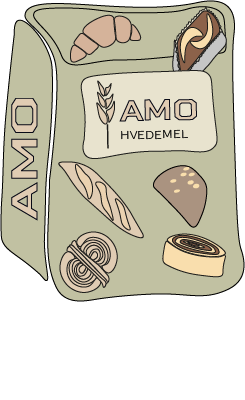

Fremstilling af Amo Hvedemel
Hvordan laver Amo hvedemel?
Vi producerer hvedemel ved at dyrke hvedekorn
1. Hvedekornet er et lille korn som sås i jorden i september.
2. Derefter slår hvedefrøet rødder i jorden og i løbet af 1 år spirer hvedefrøet.
3. Pludselig vokser der skud på det lille strå.
4. Efter nogle måneder vokser planten sig større og danner hvedekerner i toppen af hvedeplanten.
5. Planten er nu blevet tør og er klar til at høstes omkring juni-juli måned.
6. Perioden tager 1 år fra planten sås til den høstes.
7. Efter at hveden er høstet, så ender hveden til produktion.
8. Dele af den høstet hvede bliver malet findelt til hvedemel og noget bliver grovere malet eks. Amo Grahamsmel.
9. Hvedemelet kan bruges til kager, brød, boller, pasta, madlavning.
Hveden vi producerer bruges til disse produkter
- Amo Hvedemel
- Amo Tipo 0 hvedemel
- Amo Pizzamel
- Amo Hvid Fuldkornshvedemel
- Amo Grahamsmel
- Amo Durummel
- Amo Sigtet Speltmel
- Amo Fuldkornsspeltmel
- Amo Sigtemel
- Amo Manitoba Hvedemel
- Amo Fuldkornshvedemel


NATUR +
NATUR + er et certifikat som vi hos Amo har lavet for, at gør vores kunder opmærksom på de hjælper med, at skabe en fremtid med mindre kemiske milder i naturen.
Hos Amo stræber vi efter at minske forbruget af sprøjtemidler og gødning i naturen, derfor stiller vi høje krav til vores landmænd omkring brugen af kemiske midler ved dyrkning korn. Desuden når du køber mel hos Amo kan vi sikre dig at kornet ikke er blevet udsat sprøjtemidler inden høst.